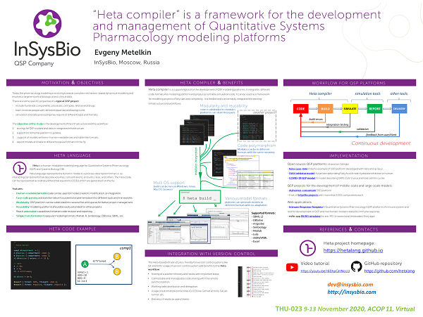

THU-023. "Heta compiler" is a framework for the development and management of Quantitative Systems Pharmacology modeling platforms
Evgeny Metelkin
InSysBio, Moscow, Russia
The video version will be available here from 2020-11-05
